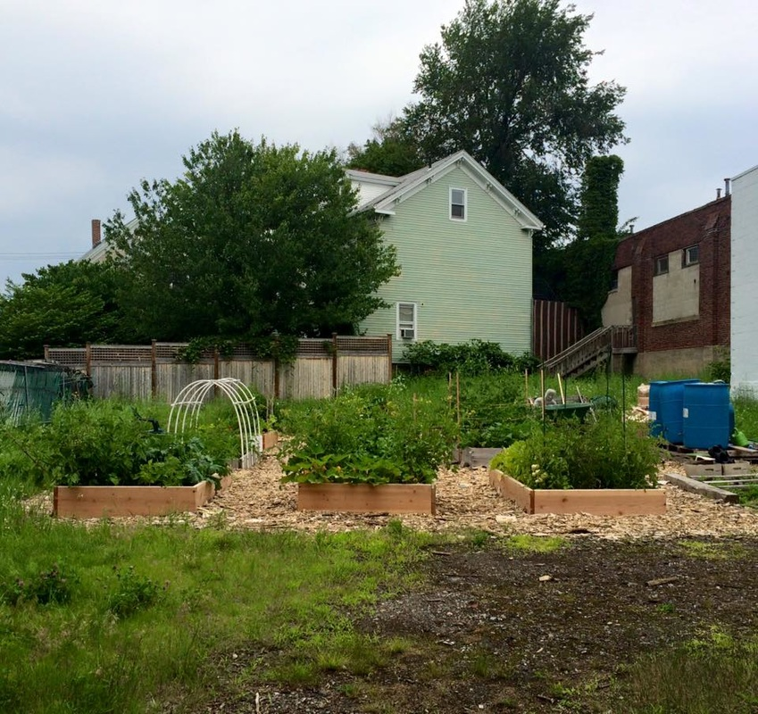

Welcome!

Concord Ave. Community Space (CACS) is a vibrant, multi-use green space just south of Union Square in Somerville, Massachusetts.
Formed in 2013 by local residents, the space continues to flourish under volunteer-based control and is dedicated to community inclusion, food security, environmental education, and preservation of green space.
The space serves as a community garden and gathering place for potlucks, movies nights, and hands-on learning opportunities about everything from medicinal plants to grassroots organizing.